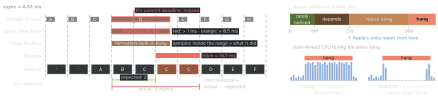
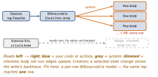

debugging · folio
In one line: The SwiftUI template (Instruments 26+) times every SwiftUI update: lanes flag the long ones, Time Profiler shows what ran, the Cause & Effect Graph shows why. A hitch = a frame left on screen too long (one late refresh is enough); a hang = a discrete input (tap, key) left waiting on a busy or blocked main thread.
Download PDF Print view LaTeX source


The SwiftUI template (Instruments 26+)
- Contents: the next-generation SwiftUI instrument + Time Profiler + Hangs + Hitches. Needs Xcode 26 and a device OS that records SwiftUI traces (Instruments 27: iOS 17+ devices only); Command-I (Profile) builds Release. The old View Body / View Properties instruments: deprecated, still in the library.
| lane | shows |
|---|---|
| Update Groups | when SwiftUI works at all — CPU busy while it is empty ⇒ the cost is outside SwiftUI |
| Long View Body Updates | body runs: orange > 500 µs,
red > 1000 µs |
| Long Representable Updates | UIKit / AppKit views hosted in SwiftUI (docs: Long Platform View Updates) |
| Other Long Updates | other SwiftUI work: geometry, text layout |
- Orange / red = how likely an update is to cause a hitch or hang — start with red; long ones just after launch (the first hierarchy) are normal. Expanded: View Body / Representable / Other Updates subtracks per module (your app, an SDK, the system); the rest grey.
- Detail pane: summary by process → module → view type, with counts; filter to Long View Body Updates or All Updates. 26: Show View Hierarchy. 27: Summary of Updates focus action in the View Hierarchy view; layout passes + why a layout was not cached.
Two questions, two workflows
- Too long? Hover the view → arrow → Show Updates → Control-click one → Set Inspection Range and Zoom → click the Time Profiler track: the call tree (or Flame Graph) of that update only. Too few samples in one update: repeat it, then Show Calls Made by
MyView.bodymerges every instance. - Too often? A long Update Group with no long update = many short ones. Set Inspection Range on the group (start it earlier to catch the cause) → All Updates counts → hover a view → Show Cause & Effect Graph. A blue → grey → blue chain = your code causing an update your own code then reacts to (e.g.
onGeometryChangedriving layout): act only past a threshold. - Why a body runs (AttributeGraph): view structs are rebuilt all the time; attributes keep identity and state. A state change opens a transaction; at the next frame it marks that attribute outdated, flags every dependent (cheap), then recomputes the outdated ones. “Why did
bodyrun?” = “what marked it outdated?”Self._printChanges()(debug only, best effort) names what changed, never who changed it. - Environment: reading
@Environmentdepends on all ofEnvironmentValues— any change notifies every reader, each checks its value, so a skipped body still costs. Keep geometry and timers out of it.
A Cause & Effect Graph

Hang vs hitch — Apple’s definitions
| hang | hitch | |
|---|---|---|
| noticed | main thread unresponsive ~50–100 ms+ | one refresh interval: 8.3 ms (120 Hz), 16.7 ms (60 Hz) |
| budget | < 100 ms in all, under half of it on main | main-thread work < 5 ms per frame is usually on time |
| cause | main thread busy or blocked | app late: commit; render server late: render (rarely a hang) |
| seen | run loop busy past the threshold, input or not (a potential hang) | only while a frame is due (scroll, animation) |
| field | Hang Rate: s/hour of hangs > 250 ms (median, p90) | Hitches (27): ms/s — ≤10 good, ≤25 warning, ≤50 critical |
Three kinds of hang
| kind | typical cause | fix |
|---|---|---|
| busy | one call too long, or called too often: 70 bodies × ~50 ms > 3 s | do less (lazy container, cache) or move off main |
| async | every handler short, but work queued earlier on main runs first — a sync call inside
.task, which inherits MainActor | async + nonisolated
(SE-0461 on: @concurrent) |
| blocked | waiting in a syscall (mach_msg2_trap), on a lock or semaphore, in a lazy
static let init (await does not help) | never wait on main |
Before release
- Settings → Developer → Hang Detection (development + TestFlight builds, from 250 ms) → hang log + tailspin. Animation Hitches: redesigned in 26 (multiple displays, app update intervals, far less data); visionOS 27 in Xcode 27.
Traps
- Fix hangs first — that removes many commit hitches too.
- One changed property per graph edge: after a fix, record again.
- Blocked ≠ unresponsive — an idle main thread is blocked; Hangs decides.